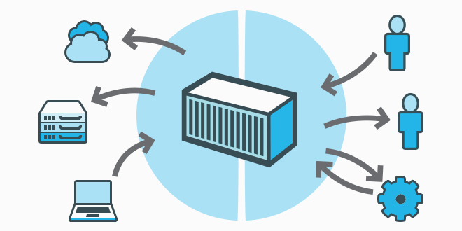

O que são Containers?
Por:Kevyn M. e Gabriel Caspirro
Definição de Container
Um container é um ambiente isolado utilizado para empacotar aplicações. Containers têm o objetivo de segregar e facilitar a portabilidade de aplicações em diferentes ambientes.
Um container contém um conjunto de processos que são executados a partir de uma imagem, imagem esta que fornece todos os arquivos necessários. Os containers compartilham o mesmo kernel e isolam os processos da aplicação do restante do sistema operacional.
A ideia é que cada container assuma apenas uma responsabilidade. Nos containers, você divide a responsabilidade isolando os processos de cada aplicação, garantindo assim que nenhum processo possa influenciar no funcionamento dos demais processos.
Um agrupamento de containers também é conhecido como cluster. Um cluster consegue compartilhar recursos como armazenamento, tornando possível a execução de dezenas e até centenas de containers de maneira simultânea a partir do mesmo ambiente.
Os containers são muito práticos em ambiente de desenvolvimento. Sua aplicabilidade serve como base para o modelo DevOps e auxilia as áreas de Operações e Desenvolvimento. Na área de desenvolvimento, os containers empacotam aplicações com todas as suas dependências, a fim de serem acessíveis e compartilhadas, ao mesmo tempo em que ficam agnósticas a características do ambiente, como sistema operacional. Já em operações, são processos de aplicações rodando em um kernel compartilhado, mais simples que máquinas virtuais.
Embora seja algo parecido, um container não é uma máquina virtual. A diferença entre um container e uma máquina virtual é que os containers conseguem compartilhar o mesmo kernel do sistema operacional.
Um exemplo prático
Quando uma aplicação é desenvolvida, é comum que a mesma precise ser apresentada em diferentes ambientes: geralmente, um ambiente mais voltado ao processo de desenvolvimento, um outro ambiente voltado para teste de validação e um ambiente de produção. Dependendo das características da aplicação, criar estes ambientes de maneira simples, confiável e facilitada pode vir a se tornar uma missão verdadeiramente complicada.
Com a utilização do Docker, por exemplo, você poderá implantar diferentes versões da sua aplicação para cada um dos ambientes, já que cada container corresponde à um ambiente isolado. A facilidade para replicação de containers acaba também tornando bem simples a tarefa de criação de ambientes padronizados, já que as aplicações acabam rodando em cima dos containers, os quais são completamente desacoplados de aspectos de ambiente como o sistema operacional.
Os containers são gerados a partir de uma imagem que contém todas as dependências necessárias para a aplicação ser executada. Por isso, você acaba tendo uma aplicação portátil e consistente em todas as etapas de desenvolvimento, pois todos os mecanismos e dependências necessárias para a execução da aplicação estão contidas na imagem, imagem esta que pode dar origem a vários containers, containers estes que podem ser executados de maneira uniforme em qualquer ambiente que suporta a execução de containers.
Vale lembrar que, apesar do Docker ter sido desenvolvido inicialmente com base na tecnologia LXC (Linux Containers – sendo, portanto, mais associado aos containers Linux), hoje essa tecnologia tornou-se independente de sistema operacional: podemos utilizar o Docker em ambientes Linux, Windows e MacOS.